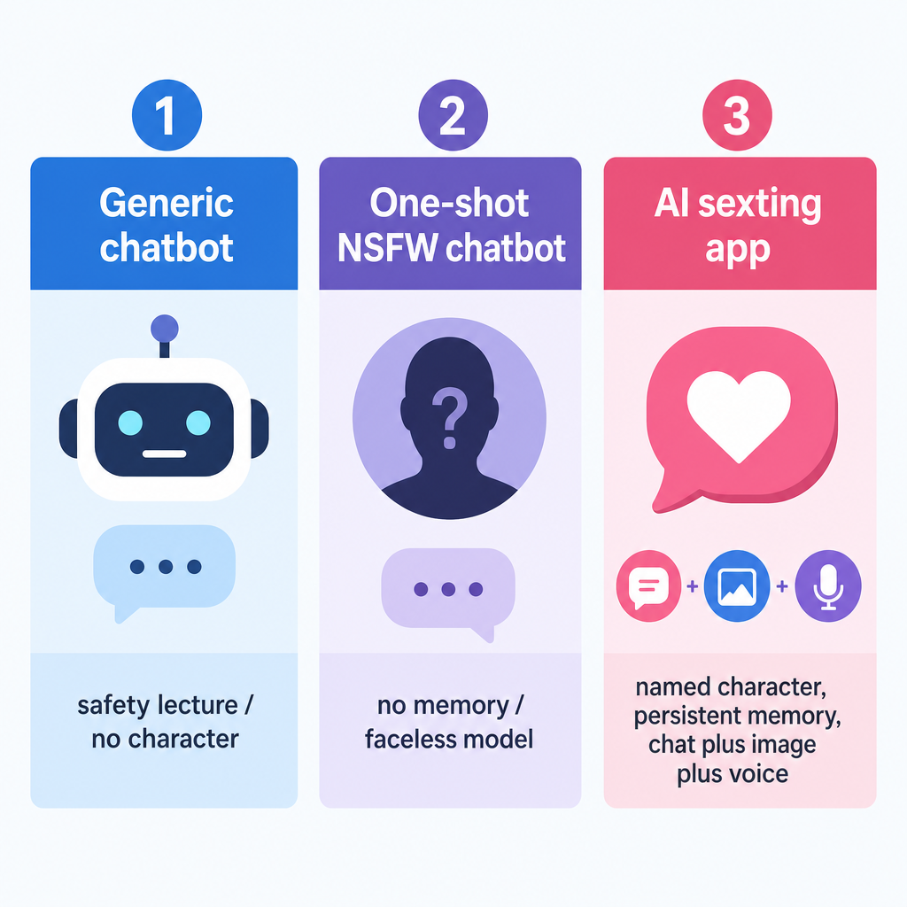
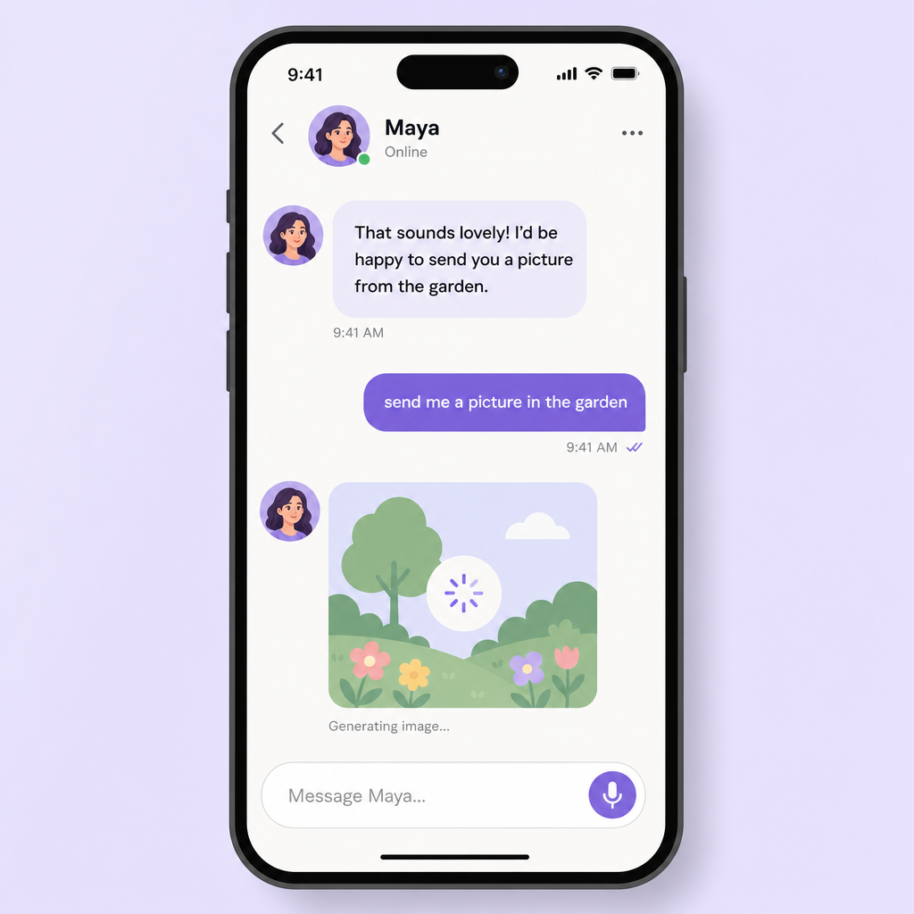
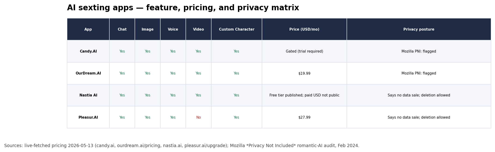
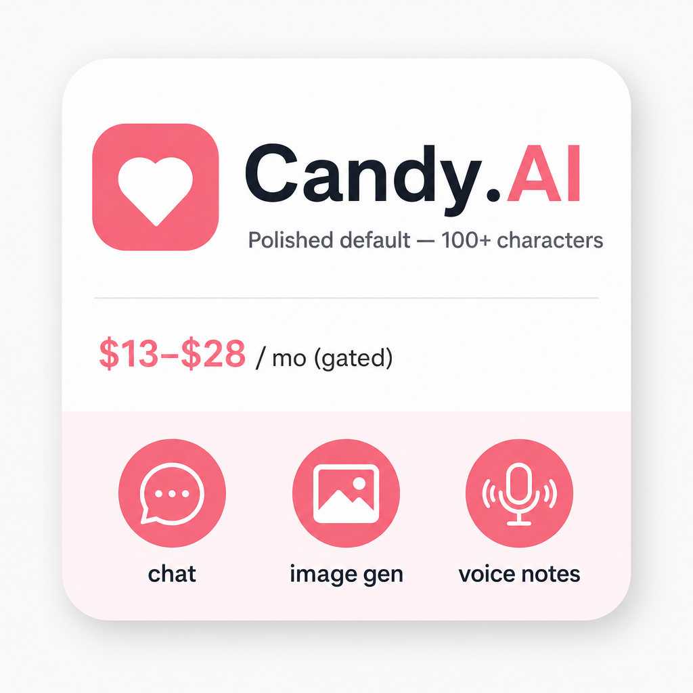
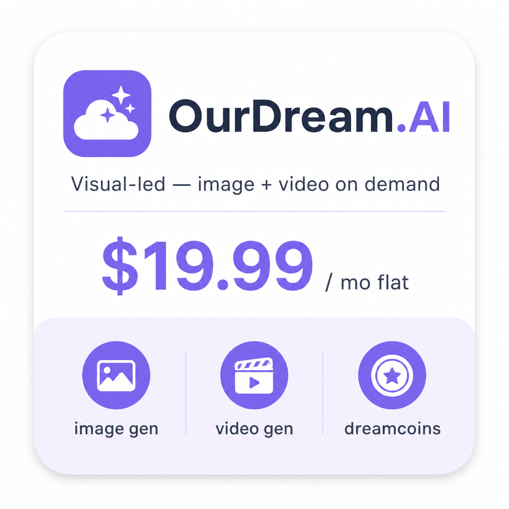
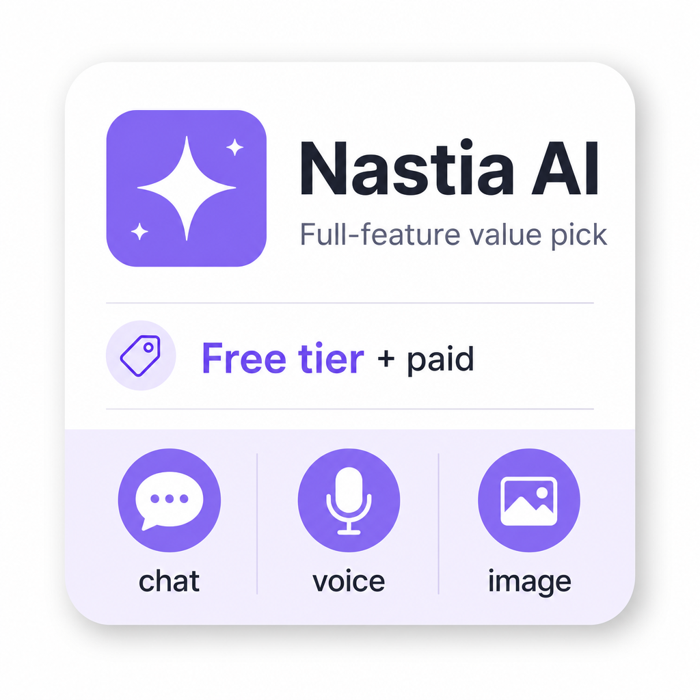
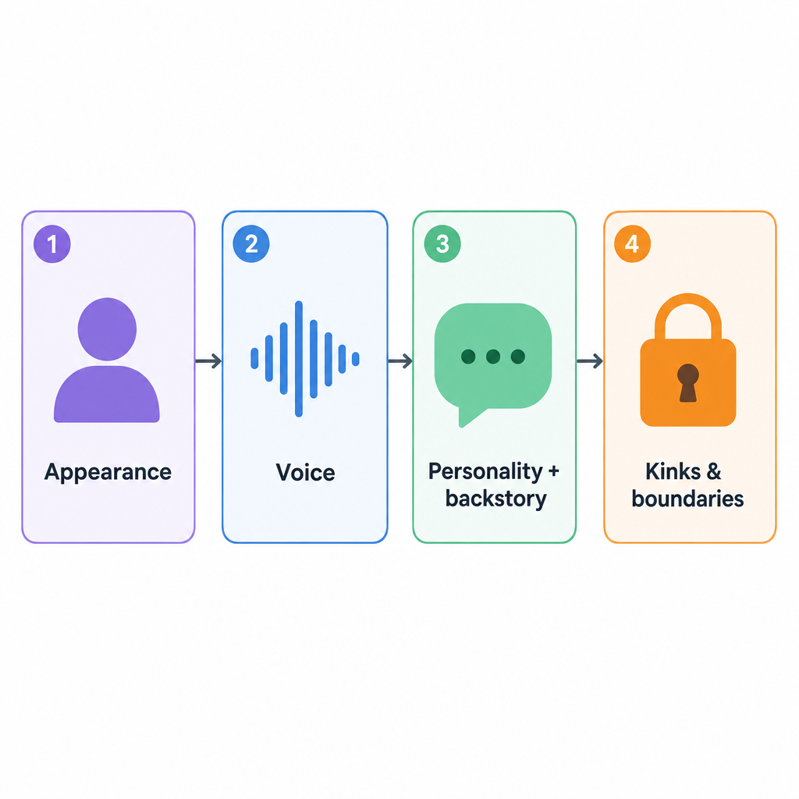
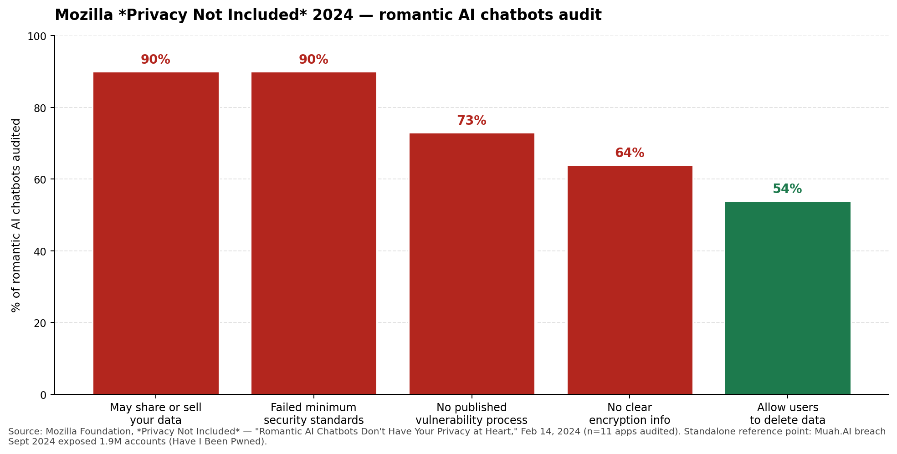

Untitled
title: "Best AI Sexting Apps in 2026: 4 Worth Your Time" description: "Four AI sexting apps worth your time in 2026. Honest picks, real prices." slug: "ai-sexting-app" category: "ai-companions" author_name: "Pleasur.AI Editorial" read_time: 10
Best AI Sexting Apps in 2026: 4 Worth Your Time
Most "best AI sexting app" articles name fourteen apps and recommend none of them.
That's the affiliate playbook. List everything, pick nothing, get paid per click. The result is a week of your time burned on installs and trial timers, while three of the five apps you tried turn out to be the same Candy clone behind different brand skins.
Four apps are worth your time in 2026. Each for a different reason. One of them is ours, and we'll say so up front the moment we get there.

Below: what an AI sexting app is and isn't, the four picks ordered by who each is for, and an honest read on privacy. Mozilla flagged this entire category in 2024, and one app on every "best of" list leaked 1.9 million accounts shortly after.
Then: what "free" means in 2026, and quick answers to the questions readers ask after they've picked but before they sign up. The broader chatbot landscape this sits inside is mapped in the AI Chatbot App Guide for 2026.
What an AI sexting app actually is
An AI sexting app is a chat app where a character built to flirt with you stays in the scene. No safety lectures. No "as an AI language model."
That's the load-bearing difference from a mainstream chatbot. general-purpose assistants and Replika all filter adult content, break character on contact, or both.
The apps in this category don't. They're built so the character keeps her tone, her name, and her thread of memory across days, not just inside a single session.
It's also distinct from a one-shot NSFW chatbot. Those are a single conversation with a faceless model. The apps here have a persistent character — one you either picked from a library or built yourself — and the character carries forward between visits.
The modern shape bundles three things into one chat: text replies, in-conversation image generation, and voice. Older apps split these across separate tabs.

Pleasur.AI's AI Companion Creator is one example of the bundled shape. The AI Girlfriend Experience piece walks a worked example across the first three weeks.
Google ranks a Washington Post piece at #2 and a Reddit thread at #4 for "ai sexting app." The SERP treats this as commercial but contested — not a clean tool-pick query. The Dirty AI Guide for 2026 covers what "unfiltered" means in practice.
With the category defined, the next question is which four — and why those four got the slot.
The 4 AI sexting apps worth using in 2026
Four apps made the cut: Candy.AI (polished default), OurDream.AI (visual-led), Nastia AI (full-feature value pick), and Pleasur.AI (build-your-own — and yes, ours). CrushOn and Botify get a one-line answer at the end.

Candy.AI — the polished default

Candy.AI is the pick if you want the most polished app in the category and don't want to think about the choice. It's why every listicle leads with it.
The library is wide: 100+ pre-built characters across realistic, anime, and boyfriend modes. The thread carries chat, voice notes, in-chat images, and short video clips without you switching surfaces.
Pricing is gated, and that's worth flagging. The homepage loads, but /pricing and /upgrade both return 404 today — Candy's public site publishes no flat monthly USD anywhere on it. Third-party reviewers cluster the annual plan around $5.99/mo equivalent. We won't quote that as fact, because the source page doesn't publish it.
The 7-day full-access trial is real and visible. Discreet billing plus crypto (BTC, ETH, USDC, LTC) gives Candy the strongest payment-privacy posture in this set.
The trade-off is depth. Pre-built characters dominate the surface; the custom-build flow is shallower than what you get with Pleasur.AI's Companion Creator. You're paying for polish and library, not flexibility.
If chat-first polish is the wrong axis, the next pick optimizes the opposite end.
OurDream.AI — the visual-led pick

OurDream.AI is the pick if image and video generation matter more to you than chat depth. It's the only app in this set whose pricing page publishes a flat monthly USD, and the only one optimized around dreamcoins rather than message count.
Pricing is $19.99/mo or $119.88/yr, live-verified on the OurDream.AI homepage. That includes 1,000 dreamcoins a month, unlimited chat, image and video generation across realistic and anime styles, and voice calls.
The content policy is on the public page: no underage characters, no deepfakes, no non-consensual imagery. You can quote it before you sign up.
The trade-off is the chat persona. It's shallower than Pleasur.AI's Companion Creator depth. You're buying the visuals here, not the relationship.
If your version of sexting is visual-led — you want the character to send a picture more than you want her to remember last Thursday — OurDream is the cleaner fit.
If you'd rather not commit money before testing, the next pick is the only one with a free tier worth taking seriously.
Nastia AI — the full-feature value pick

Nastia AI is the pick if you want every feature on the matrix with a real free tier and a privacy statement you can quote.
Chat, group chat, voice messages, image gen, video gen, custom character — all verified on the live Nastia.ai homepage today. The free tier is real: daily message limits, no credit card required to try.
The paid-tier monthly USD isn't on the homepage. You figure that out after you've decided the app works for you.
Here's the privacy line, pulled directly from the page: "we never share or sell your information to third parties... you can delete your account and data at any time" (Nastia.ai). That puts Nastia in the 10% of romantic AI chatbots that don't match Mozilla's 2024 warning profile.
The trade-off is awareness. Nastia ranks lower than Botify and CrushOn on the SERP, and it sits in the "underrated by listicles, fine in practice" zone.
If brand familiarity matters to you, you'll feel that. If it doesn't, you get the full feature set for the lowest commitment.
That's three picks each for a single axis. The fourth — ours — collapses the axes by letting you build the character yourself, then chat, image, and voice in the same thread.
Pleasur.AI — the build-your-own pick (this is our app)

Pleasur.AI is our app, and the pick if you want to design the character yourself: appearance, personality, backstory, voice, kinks, the whole spec sheet. We've put it last on purpose — read about the other three first, then decide if our angle fits you.
The AI Companion Creator is the flagship. It walks you through four concrete steps.
First, set appearance presets — hair, build, ethnicity, age (adult only), wardrobe. Second, pick a voice profile from the available set.
Third, define personality and write a freeform backstory; a paragraph of context produces materially better replies than three keywords. Fourth, declare conversation style and kink boundaries, then save.
The AI Girlfriend Experience post walks the full 90-seconds-to-week-three arc on the same flow if you want the worked example.
Image generation lives inside the chat thread, not on a separate page. You ask the character to send a picture and it lands in the message, in her established style, with the same face across requests.
Style presets (realistic, anime, art) and character consistency are handled by the system, not you. The standalone surface lives at pleasur.ai/generate, but the in-chat path is the one most users reach for.
Coming this week: tap the speaker icon on any reply to hear it spoken in her assigned voice. Tap the Call button on her profile for a real two-way voice conversation.
Same chat thread, same character, no separate app. After the call ends, the thread picks up where you left off.
Pricing is live-verified on pleasur.ai/upgrade today: Starter $12.99/mo ($5.20 annual equivalent), Standard $27.99/mo ($11.20 annual), Ultimate $49.99/mo ($20 annual). A 7-day money-back guarantee covers the trial risk.
The trade-off is honest: no permanent free tier, and the build-your-own flow takes a few minutes longer than picking a pre-built character off a library shelf.
Two apps everyone else features didn't make our list. Here's the short version on why.
Why not CrushOn or Botify?
CrushOn AI didn't make the cut on verifiability. Every URL we tested (/, /pricing, /plans, /billing) returned HTTP 403 on 2026-05-13 — the full post-mortem and the third-party numbers we wouldn't publish live in our CrushOn AI Review. We won't quote third-party numbers as live fact.
If you came specifically for that pick, the longer take lives in our CrushOn AI Review. Botify is SERP-strong (#3) but the homepage publishes nothing extractable about features or price, so we couldn't compare it honestly.
How to pick the right one
Three honest questions decide this: what you want to do with the app, whether you want to build the character or pick one off the shelf, and what your privacy floor is.
Do you want to build, or pick? Build means Pleasur.AI; the Companion Creator is the deepest in the set. Pick from a library means Candy.AI for the most polished one, or Nastia AI for a smaller library with a real free tier.
Is the point chat, or visuals? Chat-led means Pleasur.AI or Candy.AI. Image and video-led means OurDream.AI; the dreamcoin model and the published flat pricing both favor heavy generators.
What's your privacy floor? Want crypto and discreet billing — Candy.AI. Want a quotable on-page privacy statement — Nastia AI. Want both the build flow and the privacy posture — Pleasur.AI.
The third question is the one most listicles wave at. It's worth its own section.
Privacy is a real buying criterion
Two public, dated, almost-never-cited sources should decide whether you trust any AI sexting app you sign up for. Mozilla's Privacy Not Included romantic-chatbot report from February 2024. The HIBP record for the Muah.AI breach from September 2024.
Mozilla tested 11 romantic AI chatbots. 90% may share or sell personal data, and only one (Genesia AI Friend & Partner) passed minimum security standards. All 11 earned the Privacy Not Included warning label.

The Muah.AI breach is the abstract risk made concrete. 1.9 million accounts exposed, added to HaveIBeenPwned on October 8, 2024.
Email addresses, prompts, and chat content all leaked at once. For the full breakdown of what Muah did and where it broke, our Muah AI Review covers the post-mortem.
So what do you check before you sign up? Four things.
Is there a published deletion path? Is the privacy policy linked from the footer of the live site, in plain English? Is there a payment option that doesn't tie to your real name (crypto, virtual card)? Can you use an email forwarder?
One footnote worth keeping. MyAnima's own blog ranks MyAnima #1 in the "best AI sexting apps" SERP without disclosing that it's the operator's blog.
That's a clean illustration of why you should ask who owns the listicle before you read its rankings — including this one. Which is why we put our disclosure up front.
Privacy decided, the next question every reader asks is what the free tiers deliver.
What "free" means in 2026
"Free" in this category almost always means a trial, a daily message cap, or a 50-message ceiling that ends mid-conversation. Which version you get changes how you evaluate the app.
Candy.AI gives you a 7-day free trial of full features. After that, paid, and the monthly price isn't published until you're inside the trial.
OurDream.AI doesn't have a permanent free tier visible; the pricing page goes straight to $19.99/mo or $119.88/yr. Nastia AI has a real free tier with daily message limits and no card required to try — the closest thing to "free" in this set.
Pleasur.AI has no permanent free tier either, but the 7-day money-back guarantee on paid tiers makes the risk close to a free trial in practice.
The honest take: if "free" matters more than depth, Nastia is the cleanest fit. If you want a deeper experience and you're willing to put $13–$28 on the line for a week, the money-back turns paid-with-rollback into a functional trial.
For the broader take on what the free tier buys you across the category, see our piece on the best uncensored AI chatbot free.
FAQ
Is AI sexting legal in the US? Yes, for adults (18+). Age verification varies by platform; some gate at checkout, some at signup, some not until a payment dispute. Check the terms before you sign up.
The fictional-character framing is the safe-harbor zone. Generating sexual content of a real, identifiable person without consent is a different legal universe.
Will the AI remember what I said last week? Depends on the platform's memory architecture. Pleasur.AI and OurDream.AI both advertise long-term memory; Candy.AI and Nastia vary by character or mode.
The cheap test is to reference something specific from session two when you start session four, and see what the character does with it.
Can the AI generate images of itself? Yes on all four picks; quality and per-message limits vary. OurDream's dreamcoins are the most generous quota.
Pleasur.AI's in-chat image generation is the most integrated with the character's design — the same face you built lands in every image you request.
What's the difference between an AI sexting app and an AI girlfriend app? Mostly framing. Sexting apps lead with the chat or text experience; girlfriend apps lead with persona depth and the long-term-relationship arc. The category overlap is roughly 80%.
Will the character "fall in love" with you? That depends on memory and the persona script, not the marketing copy. For the texture of how it unfolds, read The AI Girlfriend Experience.
Are there anonymous or no-sign-up options? A few exist (search "no sign up" and you'll find a list of about 14), but quality is thin. The production-grade chat in the four apps above all require an account.
Pair an email forwarder with a crypto payment if anonymity matters more than persistence.
Conclusion
The category isn't short on apps. It's short on listicles willing to recommend any of them.
Four apps are worth your time in 2026: Candy.AI if you want polish, OurDream.AI if visuals are the point, Nastia AI if you want everything with a real free tier, and Pleasur.AI if you want to build the character yourself.
Read Mozilla and HIBP before you sign up for any of them. Then try the one that matches your honest answer to "build, or pick" first.
If the build path is yours, start a character at pleasur.ai/create and run the worked example from The AI Girlfriend Experience against whatever you sign up for.
Statements below are qualitative framings / superlatives / population claims. They are NOT auto-linked — flagged for editor review per the two-tier citation rule.
- "Most 'best AI sexting app' articles name fourteen apps and recommend none of them." (population quantifier)
- "three of the five apps you tried turn out to be the same Candy clone behind different brand skins" (population claim, no live source)
- "Four apps are worth your time in 2026" (editorial superlative — the whole thesis)
- "the most polished app in the category" (Candy.AI superlative)
- "every listicle leads with it" (population claim re: Candy.AI)
- "the strongest payment-privacy posture in this set" (Candy.AI superlative)
- "the only app in this set whose pricing page publishes a flat monthly USD" (OurDream superlative — supported by research dossier, not externally cited)
- "the only one optimized around dreamcoins rather than message count" (OurDream superlative)
- "the deepest in the set" (Pleasur.AI Companion Creator superlative)
- "the most integrated with the character's design" (Pleasur.AI image-gen superlative)
- "the category overlap is roughly 80%" (estimated %, no external source — editor: cut, soften, or source)
- "search 'no sign up' and you'll find a list of about 14" (population claim — research dossier mentions 14-app whatsthebigdata listicle)
- "100+ pre-built characters across realistic, anime, and boyfriend modes" (Candy.AI claim — homepage gated, not live-verified)
- "Email addresses, prompts, and chat content all leaked at once" (Muah breach detail — covered by HIBP link upstream; editor decides if needs second source)
Must-cite claims identified: 13 - Mozilla flagged the category 2024 (intro) — LINKED - 1.9M accounts leaked (intro) — LINKED - Candy.AI /pricing + /upgrade return 404; no flat USD published — LINKED (candy.ai/) - OurDream pricing $19.99/mo or $119.88/yr — LINKED (ourdream.ai/) - OurDream 1,000 dreamcoins/mo + unlimited chat + image/video + voice — LINKED (same) - Nastia features verified on homepage — LINKED (nastia.ai/) - Nastia privacy quote "we never share or sell..." — LINKED (nastia.ai/) - Mozilla "10% don't match warning profile" (1 of 11 = ~9%) — LINKED (Mozilla) - Pleasur.AI tier pricing $12.99 / $27.99 / $49.99 — LINKED (pleasur.ai/upgrade) - CrushOn URLs returned HTTP 403 on 2026-05-13 — LINKED (internal CrushOn review) - Mozilla tested 11 romantic AI chatbots + Genesia passed + warning label — LINKED (Mozilla) - 1.9M accounts added Oct 8, 2024 (Muah / HIBP) — LINKED (HIBP) - MyAnima ranks itself #1 on its own blog — LINKED (myanima.ai/blog/best-ai-sexting-apps)
Linked: 13 / 13 = 100% must-cite density (threshold: 60%)
Anchor URLs resolution status (pre-confirmed from research revision pass): - mozillafoundation.org Privacy Not Included report — OK - haveibeenpwned.com/PwnedWebsites — OK - ourdream.ai — OK ($19.99/mo, $119.88/yr verified) - candy.ai — OK (homepage 200, pricing gated — citation reflects that) - nastia.ai — OK - pleasur.ai/upgrade — OK - crushon.ai pages — 403 across the board (intentionally NOT linked; replaced with internal CrushOn review) - myanima.ai/blog/best-ai-sexting-apps — referenced from SERP top-10; not re-fetched live this stage (research dossier SERP confirms presence)